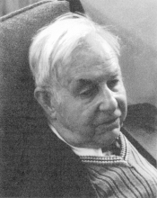

Please note: the AAS Obituaries are temporarily being hosted on this website while their full content is being ingested into the PubPub publishing platform newly adopted by the Bulletin of the American Astronomical Society. When the migration is complete, your existing links will take you to the final, migrated content. Contact peter.williams@aas.org with any questions.
Newton G. Sprague (1914-1998)
Newton Gordon Sprague, the first director of the Ball State University Planetarium, passed' away on 18 September 1998 at the age of 84. Born and educated in Indianapolis, Sprague received a BS in Chemistry from Butler University in 1935. Following his graduation Sprague worked as a postal clerk because of poor economic conditions that prevailed during the Great Depression.
During World War II, Sprague served as an officer in charge of aerial camera repairs for the only night-reconnaissance squadron in the Army Air Corps. During this period, he developed and combat-tested a moving-film magazine and electric time delay for the K19B camera, and a split vertical camera installation for the A-20 aircraft. Sprague worked with Harold E. Edgerton in designing and testing the original K29 aerial camera and the D-2 stroboscopic flash unit.
After the war, Sprague worked as an industrial chemist, and as an assistant in visual productions for the Indianapolis public school system, while taking advanced courses in physics, mathematics and science education at Indiana University, earning both MA (1950) and EdD (1955) degrees. After he completed his graduate education, Sprague was appointed Consultant in Science and Mathematics and conducted in-service teacher training for the Indianapolis school system. In 1960, Sprague joined the faculty of Ball State University (then College) as an assistant professor, handling classes in astronomy and teacher education for the physical sciences.
During the early to mid-1960s, Ball State undertook the development of the Cooper Science Center on campus. Sprague took the lead role in designing a planetarium and observatory as part of that effort. He traveled around the country visiting other planetariums collecting information on their design and operation. The planetarium finally selected, a Spitz A3P with a 30-foot dome and 77 seats, opened in 1967 along with the remainder of the Cooper Science Center, and provided a valuable tool for regional science education as well as astronomical orientation. Sprague was an innovative designer and developed a unique vibration damping system for the rooftop observatory at the Cooper Center. After the opening of the Cooper Center and commissioning of the new astronomical facilities therein, Sprague added courses in planetarium education to his previous teaching load in astronomy and general science education. Sprague attended the 1970 Conference of Planetarium Educators at East Lansing, Michigan and was a charter member of the International Society of Planetarium Educators (now the International Planetarium Society.)
After his retirement from Ball State in 1978, Sprague and his wife Rachel moved to Florida, where for many years he was an active volunteer in community education programs. Jordan Marché provided useful information regarding the history on the planetarium used in the preparation of this obituary and his assistance is gratefully acknowledged.
Photograph courtesy of Penelope S. Hession
Obituary written by: Ronald Kaitchuck (Ball State University)
BAAS Citation: BAAS, 2001, 33, 1583
SAO/NASA ADS Bibcode: 2001BAAS...33.1583K